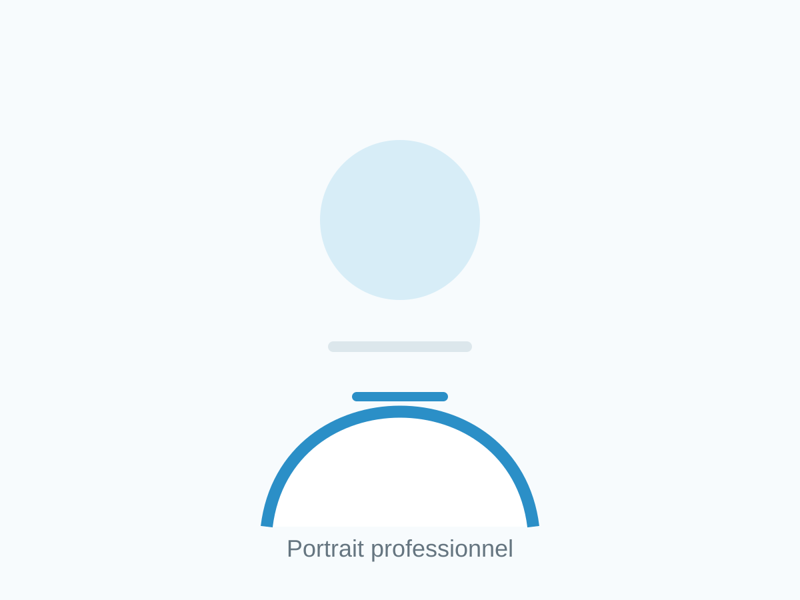

Formation
Informations sur les études, diplômes et formations complémentaires à compléter avec le parcours exact du Dr Musaab ABU-BAKR.

Ophtalmologue à Saint-Raphaël
Le Dr Musaab ABU-BAKR reçoit les patients adultes pour les consultations ophtalmologiques, le dépistage, le diagnostic et le suivi des maladies oculaires courantes.
Prendre rendez-vousInformations sur les études, diplômes et formations complémentaires à compléter avec le parcours exact du Dr Musaab ABU-BAKR.
Expériences hospitalières, activités en cabinet et domaines d'intérêt clinique à préciser.
Consultations ophtalmologiques, contrôle de la vision, suivi du glaucome, fond d'oeil, rétine et diabète, cataracte, paupières et orbites.